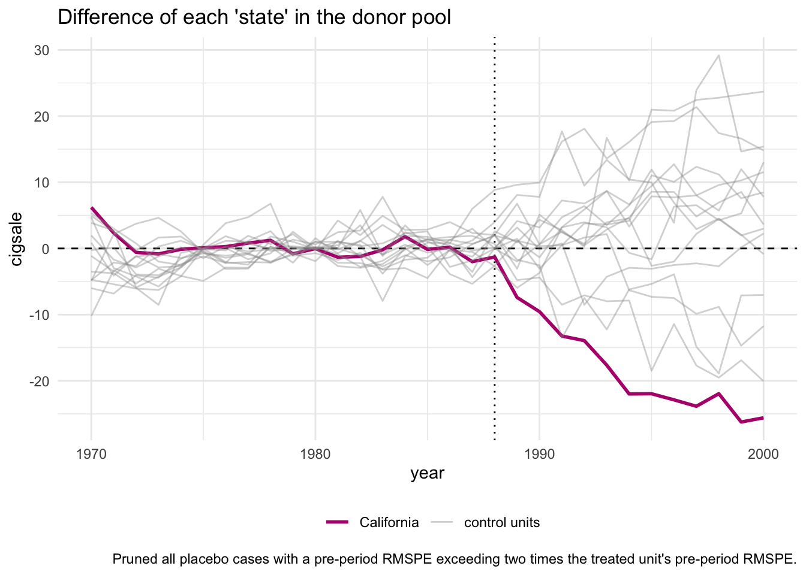

Capítulo 10 Synthetic Control
Vamos começar com um exemplo, já famoso na literatura, de Controle Sintético. O estado da Califórnia implmentou uma proibição de uso de cigarro e digamso que queremos ver o efeito dessa proibição, isto é, nosso estimando é \(\tau_{\text{ban}, \text{CA}} = Y(1)_{\text{ban}, CA} - Y(0)_{\text{ban}, \text{CA}}\).
Como não observamos \(Y(0)_{\text{ban}, \text{CA}}\), temos de criar uma “Califórnia sintética”. Antigamente, iremos usar alguma média dos demais estados “não-tratados”para estimar o contrafactual. Contudo, não é muito convincente.
| state | year | cigsale | retprice | california | after_treatment |
|---|---|---|---|---|---|
| 1 | 1970 | 89.8 | 39.6 | FALSE | FALSE |
| 1 | 1971 | 95.4 | 42.7 | FALSE | FALSE |
| 1 | 1972 | 101.1 | 42.3 | FALSE | FALSE |
| 1 | 1973 | 102.9 | 42.1 | FALSE | FALSE |
| 1 | 1974 | 108.2 | 43.1 | FALSE | FALSE |
| 1 | 1975 | 111.7 | 46.6 | FALSE | FALSE |
Suponha que obtivemos dados para \(J+1\) unidades para unidades \(j = 1, 2, ..., J+1\), e sem perda de generalidade, a primeira unidade \(j=1\) é a de tratamento ou sob intervenção. O grupo de unidades para comparação (donor pool) é dado por \(j = 2, ..., J+1\), uma coleção de unidade não-tratadas. Os dados são observados por \(T\) períodos \(1, 2, ..., t_0, t_1, t_2, ..., T\), em que de \(1\) até \(t_0\) nenhuma unidade foi tratada ou sofreu intervenção. Para cada unidade \(j\), observamos também um conjunto de \(k\) preditores, \(X_{1j}, X_{2j}, ..., X_{kj}\), que pode incluir vaores pré-intervenção da variável resposta \(y_{jt}\).
A ideia é usar com combinação linear do donor pool, com pesos apropriados, para estimar o contrafactual, isto é, o resultado potencial dos tratados. Lembrando que o estimando usual de interesse é o ATT: \[ \mathbb{E}[Y(1)_{it}|D_{it}=1] - \mathbb{E}[Y(0)_{it}|D_{it}=1] \] A dificuldade, como sempre, é que não observamos \(\mathbb{E}[Y(0)_{it}|D_{it}=1\). Estimar ou imputar esse missing data a partir de uma média ponderada é o objetivo de nosso estimador. A ideia é um pouco parecida com matching, em que nós pareávamos unidades de controle com as taratdas, minimizando a distância a partir das covariáveis. Aqui, vamos fazer algo parecido, mas com uma diferença chave: vamos incluir nas covariáveis a variável resposta defasada. Esse método foi introduzido por Abadie et. al em um journal de ciência política.
Vamos usar a abordagem de Doudchenko e Imbens (2018) para apresentar o médo, pois vai faciliar a introdução posterior de diferença em diferenças sintéticas.
Nossos dados podem ser organizados da seguinte forma:
10.0.1 Tratamento
Suponha, como no caso da proposição 99, que temos uma unidade tratada e o tratamento é absorvente. O banco de dado para o tratamento pode ser representado como:
\[\begin{aligned} D \;=\; \begin{bmatrix} 0 & 0 & 0 & \cdots 0 & 0\\ 0 & 0 & 0 & \cdots 0 & 0\\ \vdots \\ 0 & 0 & 0 & \cdots 0 & 1\\ 0 & 0 & 0 & \cdots 0 & 1\\ \end{bmatrix} \end{aligned}\]Aqui, o estados estão nas colunas, Calinfórnia é a última coluna, e nas linhas temos os períodos de tempo. E podemos simplificar a matriz acima para apenas quatro blocos:
\[\begin{aligned} D \;=\; \begin{pmatrix} \mathbf{0} & \mathbf{0} \\ \mathbf{0} & \mathbf{1} \end{pmatrix} \end{aligned}\]O que nos leva à seuinge matriz de resultados:
\[\begin{aligned} Y \;=\; \begin{pmatrix} \mathbf{Y_{co, pre}} & \mathbf{Y_{tr, pre}} \\ \mathbf{Y_{co, post}} & \mathbf{Y_{tr, post}} \end{pmatrix} \;=\; \begin{pmatrix} Y_{co, pre}(0) & Y_{tr, pre}(0) \\ Y_{co, post}(0) & Y_{tr, post}(1) \end{pmatrix} \end{aligned}\]E de maneira similar para as covariáveis, mas vamos simplificar e supor que não temos nenhuma, sem perda de generalidade.
Relembrando, nosso estimando é dado por: \[ \mathbb{E}[Y(1)_{it}|D_{it}=1] - \mathbb{E}[Y(0)_{it}|D_{it}=1] \]
E preciso para isso estimar \(\mathbb{E}[Y(0)_{it}|D_{it}=1]\), em nossa nova notação: \(Y(0)_{it}|D_{it}=1 \text{, p/ todo t} > t_0 = Y_{tr, post}(0)\). E nosso estimador será: \[ Y_{tr, post}(0) = \mu + \sum_{i \in co}w_iY_{i,t} \] Em que \(w_i\) são os pesos do donor pool.
Em ADH (2010), as restrições são:
\(\mu = 0\)
\(\sum_i w_i = 1\)
\(w_i \geq 0 \text{, } \forall i\)
Restrição 1 signifca que não há diferença de nível. Suposição 2 significa que o contrafactual tem de ser contruído no suporte do donor pool. Suposição 3
A intuição para o cálculo do peso é parecida da regressão linear, em que estamos minimizando a soma da distância. A diferença é que é uma soma diferente.
\[ ||\mathbf{X}_{tr} - \mathbf{X}_{co}\mathbf{W}|| \] Lembrando que vamos incluir a VD defasada em \(X\).
Vamos para o R para ver isso em ação. Dica: Há vários pacotes, mas o original, synth, é muito complexdo de usar e não recomendamos. augsynth/tidysynth and synthdid packages (original package is tough to use)
10.1 Implementação no R
| state | year | cigsale | lnincome | beer | age15to24 | retprice |
|---|---|---|---|---|---|---|
| Rhode Island | 1970 | 123.9 | NA | NA | 0.1831579 | 39.3 |
| Tennessee | 1970 | 99.8 | NA | NA | 0.1780438 | 39.9 |
| Indiana | 1970 | 134.6 | NA | NA | 0.1765159 | 30.6 |
| Nevada | 1970 | 189.5 | NA | NA | 0.1615542 | 38.9 |
| Louisiana | 1970 | 115.9 | NA | NA | 0.1851852 | 34.3 |
| Oklahoma | 1970 | 108.4 | NA | NA | 0.1754592 | 38.4 |
smoking_out <-
smoking %>%
# initial the synthetic control object
synthetic_control(outcome = cigsale, # outcome
unit = state, # unit index in the panel data
time = year, # time index in the panel data
i_unit = "California", # unit where the intervention occurred
i_time = 1988, # time period when the intervention occurred
generate_placebos=T # generate placebo synthetic controls (for inference)
) %>%
# Generate the aggregate predictors used to fit the weights
# average log income, retail price of cigarettes, and proportion of the
# population between 15 and 24 years of age from 1980 - 1988
generate_predictor(time_window = 1980:1988,
ln_income = mean(lnincome, na.rm = T),
ret_price = mean(retprice, na.rm = T),
youth = mean(age15to24, na.rm = T)) %>%
# average beer consumption in the donor pool from 1984 - 1988
generate_predictor(time_window = 1984:1988,
beer_sales = mean(beer, na.rm = T)) %>%
# Lagged cigarette sales
generate_predictor(time_window = 1975,
cigsale_1975 = cigsale) %>%
generate_predictor(time_window = 1980,
cigsale_1980 = cigsale) %>%
generate_predictor(time_window = 1988,
cigsale_1988 = cigsale) %>%
# Generate the fitted weights for the synthetic control
generate_weights(optimization_window = 1970:1988, # time to use in the optimization task
margin_ipop = .02,sigf_ipop = 7,bound_ipop = 6 # optimizer options
) %>%
# Generate the synthetic control
generate_control()
# série do observado e controle sintético
smoking_out %>% plot_trends(time_window = 1970:2000)
A quantidade causal de interesse pode ser visualizada do seguinte modo:

E é possível visulizar os pesos de cada unidade e das variáveis:

Podemos também olhar o balanceamento entre o observado e o sintético:
## # A tibble: 7 × 4
## variable California synthetic_California donor_sample
## <chr> <dbl> <dbl> <dbl>
## 1 ln_income 10.1 9.85 9.83
## 2 ret_price 89.4 89.4 87.3
## 3 youth 0.174 0.174 0.173
## 4 beer_sales 24.3 24.2 23.7
## 5 cigsale_1975 127. 127. 137.
## 6 cigsale_1980 120. 120. 138.
## 7 cigsale_1988 90.1 91.4 114.A Inferência é complicada. O método tradicional é o chamado teste placebo, cuja intuição é a de um teste de permutação, ou seja, a gente diz que um outro estado foi tratado (NY, por exemplo), e roda o modelo de novo e assim por diante para todas as unidades do donor pool. O gráfico abaixo traz isso pronto.

10.2 Synthethic DiD
Synth DiD comebinar controle sintético com DiD, em algo novo. Então, vamos começar revisitando DiD. Nós vimos que o estimador de DiD é equivalente a uma regressão linear com efeitos fixos de unidade e tempo. Vamos aplicar nosso estimador para os dados da da proposição 99.
library(fixest)
smoking_did <- smoking %>%
mutate(treatment = ifelse(state == "California" & year > 1988, 1, 0))
did <- feols(cigsale ~ treatment | state + year, data = smoking_did)
etable(did)## did
## Dependent Var.: cigsale
##
## treatment -27.35*** (2.802)
## Fixed-Effects: -----------------
## state Yes
## year Yes
## _______________ _________________
## S.E.: Clustered by: state
## Observations 1,209
## R2 0.87764
## Within R2 0.03267
## ---
## Signif. codes: 0 '***' 0.001 '**' 0.01 '*' 0.05 '.' 0.1 ' ' 1O problema dessa. estimativa é que a suposição de tendências paralelas na média não é muito crível.
df <- smoking_did %>%
mutate(event_time = year - 1988,
id = as.integer(as.factor(state))) %>%
group_by(state) %>%
mutate(g = ifelse(state == "California" & year >= 1988, 1988, 0))
# Estimação do modelo event study
# model_feols <- feols(
# cigsale ~ i(event_time, ref = -1) | unidade + periodo,
# data = df)
library(did2s)
out_es <- event_study(
data = df,
idname = "id",
tname = "year",
gname = "g", # coluna que indica o período de tratamento para cada i
yname = "cigsale",
estimator = "all"
)## Error in max(t) : invalid 'type' (list) of argument## Error in fixest::feols(sunab_formla, data = data) :
## Evaluation of the right-hand-side of the formula raises an error:
## in i(factor_var = period, f2 = cohort, f_n...:
## Argument `factor_var` must be a vector. Problem: it is of length 0, while
## it should have a positive length.## Error in create_Atheta_list_for_event_study(eventTime = eventTime, g_list = g_list, :
## There are no comparison cohorts for the given eventTime
E se a gente combinasse controle sintético com DiD, isto é, usasse peso para criar tendências paralelas, e então aplicasse DiD?
Arkhangelsky et al (2021) mostraram que podemos reescrever o estimador de controle sintético como:
\[ (\hat{\mu}, \hat{\gamma}, \hat{\tau}) = \text{arg}\,\max\limits_{\mu, \gamma, \tau}\ \sum_i \sum_t (y_{it}) - \mu - \gamma_t -D_{it}\tau)^2\hat{w}_i \] Já o DiD é dado por: \[ (\hat{\mu}, \hat{\alpha}, \hat{\gamma}, \hat{\tau}) = \text{arg}\,\max\limits_{\mu, \gamma, \tau}\ \sum_i \sum_t (y_{it}) - \mu - \alpha_i - \gamma_t -D_{it}\tau)^2 \]
A a proposta dos autores, o Synthetic DiD é dada pelo estimador: \[ (\hat{\mu}, \hat{\alpha}, \hat{\gamma}, \hat{\tau}) = \text{arg}\,\max\limits_{\mu, \gamma, \tau}\ \sum_i \sum_t (y_{it}) - \mu - \alpha_i - \gamma_t -D_{it}\tau)^2\hat{w}_i\hat{\lambda}_t \] Como antes, \(\hat{w}_\) são pesos para cada unidade que procuram balancear a tendência pré-exposição ao tratamento nos grupos controle e de tratamento (no exemplo, demais estados e Califórnia). E introduzem pesos \(\hat{\lambda}_t\) para os períodos de tempo \(t\) que procuram balancear os períodos pré-exposição com os períodos pós-exposição.
Contrast o SDiD com o DiD, e a didferença são os dois pesos. Basicamente, estamos estimando regressão linear local ao colocar mais peso em unidades que são, em média, mais similares aos tratados no período pré-exposição e enfatiza períodos mais similares ao algo (período tratado). Em outras palavras, “Time weights are designed so that the average post-treatment outcome for each of the control units differs by a constant from the weighted average of the pre-treatment outcomes for the same control units”(p. 4)
Esse estimador relaxa a suposição de tendências paralelas. Agora, precisamos que um fator latente seja paralelo.
# devtools::install_github("synth-inference/synthdid")
library(synthdid)
estimators = list(did=did_estimate,
sc=sc_estimate,
sdid=synthdid_estimate)
str(synthdid_estimate)## function (Y, N0, T0, X = array(dim = c(dim(Y), 0)), noise.level = sd(apply(Y[1:N0,
## 1:T0], 1, diff)), eta.omega = ((nrow(Y) - N0) * (ncol(Y) - T0))^(1/4),
## eta.lambda = 1e-06, zeta.omega = eta.omega * noise.level, zeta.lambda = eta.lambda *
## noise.level, omega.intercept = TRUE, lambda.intercept = TRUE, weights = list(omega = NULL,
## lambda = NULL), update.omega = is.null(weights$omega), update.lambda = is.null(weights$lambda),
## min.decrease = 1e-05 * noise.level, max.iter = 10000, sparsify = sparsify_function,
## max.iter.pre.sparsify = 100)# converte para matriz
df_sdid <- df %>%
dplyr::select(state, year, cigsale, treatment) %>%
mutate(treatment = as.integer(treatment),
year = as.integer(year),
state = as.factor(state)) %>%
as.data.frame() # aparentemente panel.matrices não funciona com tibble
setup <- panel.matrices(df_sdid)
head(setup) %>%
kable()
|
|
|
|
estimates <- lapply(estimators, function(estimator) { estimator(setup$Y,
setup$N0, setup$T0) } )
head(estimates)## $did
## synthdid: -27.349 +- NA. Effective N0/N0 = 38.0/38~1.0. Effective T0/T0 = 19.0/19~1.0. N1,T1 = 1,12.
##
## $sc
## synthdid: -19.620 +- NA. Effective N0/N0 = 3.8/38~0.1. Effective T0/T0 = Inf/19~Inf. N1,T1 = 1,12.
##
## $sdid
## synthdid: -15.604 +- NA. Effective N0/N0 = 16.4/38~0.4. Effective T0/T0 = 2.8/19~0.1. N1,T1 = 1,12.standard.errors = mapply(function(estimate, name) {
set.seed(12345)
if(name == 'mc') { mc_placebo_se(setup$Y, setup$N0, setup$T0) }
else { sqrt(vcov(estimate, method='placebo')) }
}, estimates, names(estimators))
head(standard.errors)## did sc sdid
## 17.740267 9.917426 8.367993Plot comparando as estimativas.
synthdid_plot(estimates[1:3], facet.vertical=FALSE,
control.name='control', treated.name='california',
lambda.comparable=TRUE, se.method = 'none',
trajectory.linetype = 1, line.width=.75, effect.curvature=-.4,
trajectory.alpha=.7, effect.alpha=.7,
diagram.alpha=1, onset.alpha=.7) +
theme(legend.position=c(.26,.07), legend.direction='horizontal',
legend.key=element_blank(), legend.background=element_blank(),
strip.background=element_blank(), strip.text.x = element_blank())
Plot comparando os pesos.
10.3 Referências
Alcocer, J. J. (2025). Minority Legislators Sponsor and Cosponsor Differently from White Legislators: Causal Evidence from U.S. Congress. The Journal of Race, Ethnicity, and Politics, 1–13. doi:10.1017/rep.2025.29
Arkhangelsky, D., Athey, S., Hirshberg, D. A., Imbens, G. W., & Wager, S. (2021). Synthetic difference-in-differences. American Economic Review, 111(12), 4088-4118.
Arkhangelsky, D., & Imbens, G. (2024). Causal models for longitudinal and panel data: A survey. The Econometrics Journal, 27(3), C1-C61.